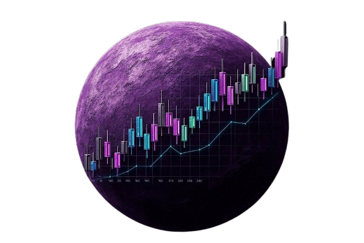

✦ STAR ARCHIVE
Forecasting stock movement using statistical models

🌐 Domain
Finance / Stock Market
💾 Dataset
DMart & NIFTY (594 records)
🛠 Tools
Python • HMM • Monte Carlo
📅 Duration
2023 – 2025
This project aims to predict DMart stock movement using statistical models including Monte Carlo Simulation, Markov Chain and Hidden Markov Model. The goal is to analyze historical trends, model future behavior and provide actionable insights.
Annualized Return
(DMart)
Annualized Volatility
(DMart)
Beta vs NIFTY
Direction
Accuracy (MC)
Simulated 500 paths for 30 trading days to forecast price range.
3-state Markov model to analyze state transitions.
2-state HMM (Bull/Bear) to capture hidden market regimes.
DMart vs NIFTY - Close Price
Ann. Return (DMart)
Ann. Return (NIFTY)
Sharpe Ratio (DMart)
Sharpe Ratio (NIFTY)
In data, we don't just find numbers, we discover stories hidden in patterns.